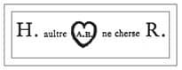
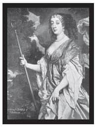
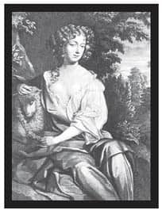
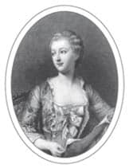
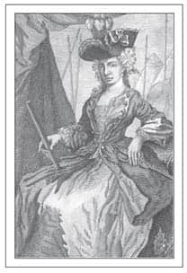

AZGIN ASİLLER
Erkekler, özellikle de önemli erkekler için,
hiçbir şey kendilerini kadınların yasak aşkına
kaptırmaktan daha kötü değildir.
Kral II. James
Erkekler ve kadınlar her zaman yasak ilişkilere girmiştir ve kraliyet aileleri de istisna değildir. Hatta büyük ihtimalle asiller herkesten daha fazla cilveleşmişlerdir. Seksapeli artırmak için güç, konum ve varlık gibisi yoktur ve güç, kraliyetle birleştiğinde sonuç görüldüğü gibi güçlü bir afrodizyak olmuştur. Kraliyet metresi ya da âşığı olmak için can atanların listesi yüzyıllar boyu kabarık olmuştur.
VIII. Henry
İnsanlara ‘azgın bir kral say’ diyecek olsanız büyük ihtimalle çoğunluk Kral VIII. Henry cevabını verecektir. Olgun kralın sadece portrelerine bakmanız bile oldukça çeşitli zevklere düşkün bir kral olduğunu anlamanıza yetecektir. 21. Yüzyıl’daki torunu Prens Charles gibi Henry de metresiyle evlenmek için eşine zor rastlanır bir istekte bulunmuştu. 16. Yüzyıl’da cep telefonları olsaydı, VIII. Henry’nin özel konuşmalarından kim bilir ne çok kirli çamaşır ortaya dökülürdü. Bunun yerine kral -ilk eşi, ölen ağabeyinin dul karısı Aragon’lu Catherine ile evliyken- sevgilisi Anne Boleyn’e sayısız aşk mektubu yazmış ve içinde AB yazan bir kalbin iki yanına ayrı ayrı H ve R (Henry Rex’in9 baş harfleri) harfleri yazarak imzalamıştır.

VIII. Henry’nin Anne Boleyn’e yazdığı bir aşk mektubundaki imzası: ‘HR’ye bir sen gereksin’
Henry yaşam dolu Anne Boleyn’e kendini öyle kaptırmıştır ki Roma’yla ters düşmeyi, aforoz edilerek sonsuza dek lanetlenmeyi ve köklü Kilise’nin baştan aşağı elden geçirilmesini göze almıştır. İngiltere bir daha asla aynı olmayacaktır ve bütün bunların hepsi Henry’nin boşanıp hayatının aşkını karısı yapabilmesi uğrunadır. (Tabii ki bunlar Anne Boleyn’in de erkek bir varis dünyaya getiremeyişine ve sahneye üçüncü bir eşin çıkmasına kadar sürecektir.)
Anne, Fransız sarayında nedime olarak birkaç yıl geçirmiştir ve İngiltere’ye 1522’de dönünce hem görünüşü, hem de keskin zekası sebebiyle birçok hayran toplamıştır. Henry’nin Anne’nin kızkardeşi Mary ile yaşadığı ilişkiden doğan bir çocuğu vardır. Dolayısıyla Henry gözünü Anne’e çevirince Anne başta direnç göstermiştir. Bu Henry’nin daha da kararlı davranması ve Boleyn ailesini hediyelere ve rütbelere boğmasıyla sonuçlanmıştır. 1532’de Anne Pembroke Markizi yapılmış ve 1533’ün başlarında Henry’den hamile kalmıştır. Hızlı davranmak zorunda kalan Henry onunla gizli bir törenle Ocak ayında evlenmiş, derhal Katolik Kilisesi’nden ayrılmış, Üstünlük Yasası’nı geçirmiş ve kendini İngiliz Kilisesi’nin başı ilan etmiştir.
Anne, 1533 yılının Haziranı’nda Westminster Manastırı’nda yapılan şaşaalı bir törenle İngiltere Kraliçesi ilan edilmiş ve Eylül ayında kızları Elizabeth doğmuştur. Talih bu ya, üç seneden kısa bir süre içinde, 19 Mayıs 1536’da, Anne evlendiği yıl çıkarılan yasa Sodomi Yasası’nın bir kurbanı olarak Londra Kulesi’nde idam edilmiştir.
Bir Kraliçenin Düşüşü
Elizabeth’in doğumundan sonra, 1534 yazında ve 1536’nın Ocak ayında yaşadığı iki gebelik de düşükle sonuçlanmıştır. Toplum Anne’yi hiçbir zaman benimseyememiş, onun yerine selefi Aragon’lu Catherine’yi tercih etmişti; kısa zamanda Anne’nin altı parmaklı bir cadı olduğuna dair dedikodular çıkmış ve ölü doğumlar suçunun birer kanıtı olarak gösterilmiştir.
Görünüşe bakılırsa Henry de bu dedikodulara kulağını kapamamıştır. Ölü doğan ikinci bebeğin erkek olduğunu duyan Henry evliliğin lanetli olduğuna karar vermiş ve iktidarsızlığının suçunu da, bu duruma cadıların sebep olduğu gerekçesiyle Anne’nin üzerine yıkmıştır.
Bu arada Anne, Henry’nin sağ kolu Thomas Cromwell ile de siyasi meseleler konusunda fikir ayrılıkları yaşamış ve bu ayrılıklar onun kaderini belirlemiştir. Cromwell ve Henry ona ağır suçlamalar yöneltmiş, sodomi suçuyla, yani Tanrı’nın hoşuna gitmeyecek herhangi bir cinsel suçla itham etmişlerdir. Bir sonraki adımdaysa cinsel suçlarına kanıt aramışlardır.
Anne’nin genç Flaman müzisyeni Mark Smeeton, 1536’nın Nisan ayında tutuklanmış ve onunla seks yaptığını itiraf edene kadar işkenceye uğramıştır. Yine işkence altında Sir Henry Norris, Sir Francis Weston ve William Brereton da benzer itiraflarda bulunmuşlardır; hatta Anne’nin erkek kardeşi Lord George Rochford da ensest ilişkiyle suçlanmış, ölü doğan erkek çocuk da yasak ilişkilerinin bir kanıtı olarak sunulmuştur.
Kendi babası ve amcası Norfolk Dükü de Anne’nin suçlarını inceleyen bu gizli kurulda yer almıştır.
Duruşmada Anne zina ve cadılıktan suçlu bulunmuş ve Londra Kulesi’ne kapatılmıştır. Halk içinde idam edilen ilk İngiliz Kraliçesi olmuş, ancak ‘merhamet’ edilip baltayla öldürülmektense Fransız bir cellat tarafından kafasının kesilmesine izin verilmiştir. İşin ilginç tarafı, Anne’nin konuşmasında kocasına övgüler yağdırmasıdır: ‘Daha merhametli bir prens görülmemiştir ve o benim için her zaman iyi, nazik ve kudretli bir efendi olmuştur.’
Şayet Henry eski aşkının ardından üzüldüyse de bu pek uzun sürmemiştir. Zira bir gün sonra Anne’nin halefi Jane Seymour’la nişanlanmış ve Whitehall Sarayı’nda 30 Mayıs’ta evlenmiştir.
Flandra Kısrağı
Sağ kalan tek (meşru) erkek varisinin Prens Edward olması sebebiyle Henry soyunun devam edeceğini garanti altına almak istiyordu; dolayısıyla Jane Seymour’un öldükten sonra derhal kendine yeni eş aramaya başlamıştı. Hans Holbein’in ihtişamlı portresinden etkilenen Henry, Alman prensesi Cleves’li Anne’de karar kıldı.
Alman prensesinin görünüşü, müstakbel eşiyle Blackheath’te tanışan Henry’yi hayal kırıklığına uğratmıştır. Tanışmanın ardından ‘Hiç de söylendiği gibi güzel değil’ diye yakınmıştır Henry. Yine de işleri ayarlayan Thomas Cromwell, Henry’yi, adını ‘Flandra kısrağı’ koyduğu bu kadınla evlenmeye ikna etmeyi başarmıştır. Zira aksi bir hareket Almanya’yla olan ittifakını tehlikeye atacaktır.
Çift Greenwich’teki Placentia Sarayı’nda, 6 Haziran 1540’ta evlenmiştir. Düğün gecesi pek de başarılı geçmemiştir. Ertesi sabah Henry Cromwell’e ‘Ona önceden de pek bayılmamıştım, ancak şimdi hiç beğenmiyorum’ demiştir. Kokusundan hoşlanmamış, fiziksel olarak itici bulmuş ve bakire olduğuna da inanmamıştır. Anne’nin alımlı kocası hakkında ne düşündüğüne dair de herhangi bir kayıt yoktur.
Aynı senenin Temmuz ayında evlilik, birleşme gerçekleşmediği gerekçesiyle feshedilmiş, Anne’ye birkaç arazi dahil cömert bir nafaka verilmiştir. Daha sonra Anne ‘Kral’ın Sevgili Kızkardeşi’ olarak anılmaya başlanmış, sarayın sıkı ziyaretçilerinden biri olmuş ve Henry’nin bütün diğer karılarından uzun yaşamıştır. Thomas Cromwell’in sonu ise daha talihsiz olmuştur: Hainlik ve kafirlik gerekçesiyle 28 Temmuz 1540’da, bu evlilik faciasının doğrudan bir sonucu olarak idam edilmiştir.
Boşanmış, Kafası Kesilmiş, Ölmüş, Boşanmış, Kafası Kesilmiş, Hayatta Kalmış
Henry’nin beşinci karısı olan Catherine Howard, kuzeni Anne Boleyn ile aynı kaderi paylaşacaktı. Ancak Catherine’nin zinadan suçlu olduğu neredeyse kesin gibidir.
Genç ve güzel Catherine, teyzesi Dul Norfolk Düşesi’nin özgür ve rahat evinde yetiştirilmişti; cinsel özgürlük de bu evde normal sayılıyordu. Catherine burada müzisyen Henry Manox’la ve evin katibi, büyük ihtimalle de evlenmeye niyetlendiği Francis Dereham’la ilişki yaşamıştı. Ama düşes onaylamadığı için bu evlilik gerçekleşmemişti.
Henry’nin sarayına yollanan Catherine çok geçmeden, yaşlanan kralın gözüne çarpmıştı. Cleves’li Anne ile olan evliliğinin feshedilmesinden sonra derhal Catherine’yi karısı yapmış ve hayat dolu Catherine kralın keyfini ve şevkini yerine getirmişti. Bir önceki nikah gecesinden beri yakasını bırakmayan iktidarsızlığından kurtulmuş ve Catherine’e ‘dikensiz gül’ adını vermiştir.
Ancak Henry 140 kiloya çıkmış ve bacağında irinli bir ülser peydah olmuştu. Ayrıca karısından otuz yıl daha yaşlıydı. Dolayısıyla kraliçenin genç erkeklerin ziyaretlerinden hoşlanması pek de şaşırtıcı olmasa gerek. Henry’nin iltimaslı saraylısı Thomas Culpeper’le flört etmiş ve onunla gizli randevularda buluşmuştur. Ayrıca eski âşığı Francis Dereham’ı katibi olarak atama gafletinde bulunmuştur.
Catherine’nin ölçüsüzlükleri Başpiskopos Cran-mer’in kulağına gitmiş, oradan da krala aksettirilmiştir. Henry başta bu suçlamalara inanmadıysa da soruşturma başlatmaya razı gelmiş, bunun sonucunda da kraliçeyi cezalandırmak için yeterli kanıt toplanmıştır. Culpeper ve Dereham, büyük ihtimalle işkence altında suçlarını itiraf etmiş ve ikisi de idam edilmiştir. Culpeper’in kafası kesilmiş, Dereham asılmış, bir ata bağlanıp sürüklenmiş ve dört parçaya ayrılmıştır. Bunu takiben kafaları Londra Köprüsü’nde kazıklara takılıp teşhir edilmiştir. Catherine’nin kafası ise Londra Kulesi’nin avlusunda 13 Şubat 1542’de kesilmiş ve adı çıkmış kuzeninin yanına, Londra Kulesi’ndeki St Peter ad Vincula Kilisesi’nde bir yere gömülmüştür.
Kanalın diğer tarafından bakan Fransız kral I. François, İngiliz dengine yazdığı mektupta kralın acılarını şöyle paylaşmıştır:
Kadınların hafifliği erkeklerin onurunu kıramaz.
Bugün hâlâ Catherine’nin hayaletinin Hampton Court Sarayı’nın Hortlaklı Salonu’nda, yani ev hapsine mahkum edildikten sonra Henry’nin ismini haykırarak koşmaya başladığı ve muhafızları tarafından alıkonduğu yerde dolaştığı söylenir.
Bakire Kraliçe
Annesinin ve üvey annelerinin kaderleri, üvey kız kardeşi Mary’nin yalancı gebeliğinde çektikleri ve Avrupa’yı kasıp kavuran ölümcül sifilis salgını göz önünde bulundurulduğunda I. Elizabeth’in evlenmemeye ant içmesi şaşırtıcı gelmeyecektir. Bunun yerine kendisini ülkesine vermiş ve neredeyse kırk beş yıl boyunca Gloriana, İyi Kraliçe Bess olarak hüküm sürmüştür.
Ancak talipleri yok değildi ve ayrıca saraylıların arasında gözdeleri de vardı, dolayısıyla Elizabeth’in gerçekten iddia ettiği gibi ‘Bakire Kraliçe’ olup olmadığı merak konusudur. En kolay cevapsa hem evet hem de hayırdır. Zeki, hayat dolu, tutkulu ve eğlence sever bir prenses ve kraliçe olan Elizabeth erkeklerin arkadaşlığını sever ve yaşamı boyunca birkaç tanesiyle birlikte anılır. Bu isimlerin arasında Thomas Seymour, Robert Dudley, Robert Devereux, Sir Walter Raleigh ve Sir Christopher Hatton da vardır.
Etrafta aşk hayatı hakkında pek çok dedikodu dolaşıyordu. Büyük ihtimalle gerçekten sevgilileri oluyordu, ancak yakınlıkları tam anlamda cinsel birleşme olmadan bitiyor olmalıydı. Sadece hamilelik korkusu dahi buna engel olmuş olabilirdi. Diğer yandan Elizabeth yardımcı ve hizmetkar bir kraliçe değil de sanki bir kralmışçasına hüküm sürmesi gerektiğini ve evlenirse bu konumunu yitireceğini de gayet iyi biliyordu.
Elizabeth’in sevgilisi olduğu iddia edilenlerden en önemlisi 1588’de ölene kadar kraliçenin yakınında olan Robert Dudley idi. Birbirlerini çocukluktan beri tanırlardı; aynı yaştaydılar ve birlikte matematik, binicilik ve dans dersleri almışlardı. Mary’nin tahtta kaldığı süre boyunca ikisi de vatana ihanet suçundan Londra Kulesi’nde mahkum edilmişlerdi.
Mary’nin 1558’in Kasım ayında ölmesiyle tahtı ele geçiren Elizabeth, Dudley’i Ahırbeyi yapmıştır, bu da onu her gün gördüğüne işaret eder. Birçok tanığın anlattıklarına göre çift ayan beyan flörtleşirdi. Saray dedikodularına göre sevgili olmuşlardı ve Elizabeth’in Dudley’in hizmetkarı Tamworth’e ödediği 500 poundluk esrarengiz meblağ da aralarında gizlenecek bir şey geçtiğine işaret etmiştir. Ancak dedikodular bir yana, Dudley da skandallara yabancı değildir. On yedi yaşındayken akranı Amy Robsart ile evlenmiş ve saraya gelirken karısını taşrada bırakmıştır. Hem İspanyol hem de Venedik büyükelçileri Elizabeth’in Dudley’in karısının ölmesini beklediğini söylemiş, nitekim 1560’ta Amy köy evlerinde bir merdivenin dibinde boynu kırık olarak bulunduğunda dedikodular iyice çığırından çıkmıştır.
Saray içinde bu kadar çok dedikodu dolaşırken Dudley ile evlilik imkansız hale gelmiştir. Ayrıca Elizabeth, bu evliliği yapması durumunda akıl danıştığı birçok yakınının yüz çevireceği konusunda uyarılmıştır. Karısının ölümünden sonra kendini Dudley’den uzaklaştırmışsa da adı onunla anılan kadınları hep kıskanmış ve uzaktan kuzeni Lettice Devereux ile 1579’da evlendiği haberini alınca Elizabeth öfekeden deliye dönmüştür. Kraliçe Lettice’i asla affetmese de Dudley’e olan bağlılığı devam eder. Genelde eli açık biri olarak tanınmasa da Dudley’i hediyelere ve mülklere boğmuştur. Onu dolgun bir maaşla hem kraliyetin koruyucusu, hem de Leicester Kontu yapmıştır. Ölmeden önceki son hareketlerinden birinde, 1588’deki İspanyol Armadası’nın yenilgisi gecesinde, Dudley Elizabeth’e zırh giymesi ve birliklerine güçlü, korkusuz bir hükümdar olarak seslenmesini tavsiye etmiştir.
Elizabeth’in 1603’te ölmesi üzerine, eşyaları arasında Dudley’den bir not bulunmuştur. Notun üzerine Elizabeth’in el yazısıyla Dudley’den gelen son mektup olduğu bilgisi düşülmüştür.
Vive La France: Kraliyet Metresi Olmak için Kriterlerin Belirlenmesi
Krallar olduğundan beri kraliyet metresleri de olmuştur, ancak hakkında isminden çok daha fazlasını bildiğimiz -hatta portreleri günümüze kadar ulaşmış- ilk metreslerden biri 15. Yüzyıl’da Fransa’da yaşayan fahişe Agnes Sorel’dir.
Dame de Beauté, yani Güzellik Kadını olarak bilinen bu kadın, resmi olarak tanınan ilk kraliyet metresidir.
Agnes, Fransız Kralı VII. Charles’e üç çocuk vermiş ve onu uzun süren bir depresyondan çıkarma başarısıyla tanınmıştır. Bunun karşılığında kral ona para, mülk, şatolar ve halkın onayını vermiştir. Sarayda oldukça önemli bir etkisi olmuş, Charles’i birliklerini toplamaya ve İngilizler’i Fransız topraklarından atmaya teşvik etmiştir. Bu mücadeleyi desteklemek için hamile Agnes, kışın ortasında Chinon Şatosu’ndan Normandiya’daki Jumieges’e doğru, kocasına katılmak için yola çıkmış ve 1450’nin Şubat ayında dördüncü çocuğunu doğurduktan kısa bir süre sonra burada ölmüştür.
Agnes’in birkaç portresi vardır. Bunlardan en meşhuru Jean Fouquet’in 1449’da onu bir göğsü tamamen ortada olan Meryem Ana olarak tasvir ettiği tablodur. Resim bir kilisede sergilenmiştir ve bu yüzden düşmanları onun kısa bir süre sonra doğum yaparken ölmesinin ilahi adalet olduğunu iddia etmişlerdir. Ölümüne dair başka fikir ayrılıkları da vardır: Önceleri dizanteriden öldüğü düşünülürken, bilim adamları artık cıva zehirlenmesinden öldüğüne kanaat getirmişlerdir. Her ne olursa olsun, keder içindeki kral ölümünden sonra Agnes’i düşes ilan etmiş ve onu şaşaalı bir törenle defnettirmiştir.
Maitresse-en-titre
Bir başka Fransız kralı, VIII. Henry ile aynı dönemde yaşayan I. François ise en sevdiği metresine maitresse-en-titre, yani resmi kraliyet metresi unvanını vermiştir.
Saray dedikoducusu ve hikaye anlatıcısı Seigneur de Brantôme, Kral François’in, yirmi üç yaşındaki Françoise de Foix bir âşığıyla gönül eğlendirirken ansızın çıkagelişi hikayesinden söz eder. Françoise de Foix’in âşığı Amiral Bonnivet yakalanmamak için hemen geniş bir şöminenin içine saklanır. Mevsimlerden yaz olduğu ve şömine de kokulu çam dallarıyla dolu olduğu için burası mükemmel bir saklanma yeri olmuştur.
Ancak Françoise ile oldukça keyifli vakit geçiren kralın acilen çişini yapması gerekir ve şömineye işeyerek rakibi amirali bilmeden sidik içinde bırakır.
François ile metreslerinden biriyle ilgili bir başka hikaye daha vardır. Metresin yatak odasına geldiğinde François onun kılıç kuşanmış kocasıyla karşılaşır. Kolay kolay korkmayan François adamı karısını incitmesi halinde kafasını kaybedeceği şeklinde uyarır, onu odadan yollar ve işine kaldığı yerden devam eder.
Yaşlı Kadınlara Övgü
Maitresse-en-titre unvanı sayesinde, Fransız kraliyet metresleri Avrupa’daki diğer meslektaşlarına göre iki yüzyıl boyunca çok daha güçlü olmuşlardır; ta ki XV. Louis’in eski metresi Madame du Barry kafasını 1793’te Fransız Devrimi’nde giyotinde kaybedene dek.
Daha 16. Yüzyıl’da I. François’in saltanatı boyunca sarayda nüfuzlu bir kimse olan Diane de Poitiers, ayrıca kralın oğlu Kral II. Henry’nin de en sevdiği metresi ve yaşam boyu arkadaşıydı. Birliktelikleri başladığında Diane otuz beş, Henry ise on altı yaşındaydı. Politikaya yatkın bir zekası olan Diane, resmi belgeleri kral ile HenriDiane diye imza atarak onaylardı. Hatırı sayılır bir nüfuzu vardı; danışma meclisinin bir üyesiydi. Başkanlar atar ve Henry’e bütün meselelerde yol gösterirdi. Üstelik Henry turnuvalarda mızrak dövüşü yaparken mızrağına karısının değil, Diane’nin kurdelesini takmıştı.
On dört yaşındayken Henry, Catherine de Medici ile evlenmişti, ancak dokuz senelik evliliklerinden sonra dahi bir vârisleri olmadı. Diane bunun evliliğin feshedilmesi için geçerli bir sebep olduğunu biliyordu ancak yerine kendisinden daha güzel yahut etkili bir kadının gelmesinden korkuyordu. Dolayısıyla sevgilisine karısıyla düzenli olarak yatmasını salık verirdi; hatta onu bu kocalık görevine hazırladığı dahi söylenir. Nitekim, planları işe yaramış, zira Henry ile Catherine’nin on çocuğu olmuştur.
Kendisinden çok daha yaşlı rakibesinin yatak odası sırlarını öğrenmek isteyen Catherine’nin Henry ile Diane’yi izlemek için duvara gizli bir delik açtığı söylenir. Henry’nin sevgilisine nasıl yumuşak davrandığını gören Catherine şoke olur. Ancak intikamını alacaktır. Henry 1559’da bir mızrak dövüşünde kaza sonucu ölümcül bir şekilde yaralanınca Catherine kontrolü ele geçirir ve Henry sürekli onun adını sayıklasa da Diane’yi kralı ölüm yatağında görmekten men eder. Ölümünden sonra, Catherine Diane’yi Henry’nin vermiş olduğu Chenonceaux Şatosu’ndan da sürdürür. Diane hayatının geri kalanını sessizlik içinde Anet Şatosu’nda geçirir.
Neşeli Kral
Oliver Cromwell’in imparatorluğu boyunca sürgünde yaşayan İngiliz Kralı II. Charles eğitim yıllarını Fransız sarayında geçirmiş, buranın ciddiyetsizlik ve yozlaşmışlık kokan havasını iyice solumuştur.
Charles takıntılı bir kadın avcısıydı; kadınları ve seksi çok severdi ve olabildiğince her yerde ve çok kez tatmin olmaya bakardı. Örneğin 1660’ta tacı devralmasını kutlamak için Charles evli metresi Barbara Villiers ile yatmıştır. Villiers bundan dokuz ay sonra bir kız çocuk dünyaya getirir. Neyse ki Barbara ve kocası açık evlilik denilebilecek bir düzende yaşamayı seçmiştir ve Charles karısının muamelesine karşılık onu Castlemaine Kontu yapar. Cleveland Düşesi yapılan Barbara ise, Charles’ten beş çocuk dünyaya getirmiş ve hepsinin kabul görüleceğini, meşru kılınacağını ve soylular sınıfına mensup olacağını garanti altına almıştır.
Bu uzun boylu, şehvetli kızıl saçlı kadın döneminin en güzel kadınlarından biriydi, ancak Barbara aynı zamanda savurgan, aç gözlü, değişken ve fazlasıyla gözü dışarıda bir kadındı. Rüşvet ve meclis kasasından para aldığı söylenirdi ve siyasetteki etkisi onu pek de sevilmeyen biri haline getirmişti. Yine de Samuel Pepys onun hayranlarından biriydi ve günlüğünü fiziksel çekiciliği hakkındaki yazılarla süslemişti.
Charles’in yakın arkadaşı ve en sevdiği şair olan, çapkınlığıyla nam salmış Rochester Kontu, şu dizelerle krala ‘neşeli’ lakabını takan kişi olmuştur:
Güvenlik, Hukuk, Din, hatta Yaşam da olsa konu,
Her şeyi yarar geçer bulurdu Kuku’yu.
Kancıktan Kancığa huzursuzca sürgün,
İşte Neşeli Kral, kepaze ve düşkün.
Charles oyuncular ve aristokratlarla yatar, fahişeler ya da diğer erkeklerin karılarıyla ayrım yapmadan oynaşırdı. Ama güzel, akıllı ve iyi huylu kadınlara karşı özel bir zaafı vardı. Onun hükümdarlığı döneminde Oliver Cromwell’in katı Püriten kanunları bir kenara bırakılmış ve ülkeye, saraylılar merkezinde olduğu loş bir kutlama havası hâkim olmuştur. Herhangi bir kadına sadık kalamayan Charles, Barbara Villiers’in haricinde birçok kadınla birlikte olmuştur. Bunların arasında oyuncu Nell Gwyn ve Fransız rakibesi Louise de Kérouaille, Portsmouth Düşesi, biseksüel sosyetik Hortense Mancini ve büyük ihtimalle hâlâ bazı İngiliz metal paralarının üzerinde resmi bulunan Britannia figürünün esinlendiği, Richmond Düşesi Frances Stewart da vardı.
Tencere Yuvarlanmış, Kapağını Bulmuş
II. Charles’in en güçlü metresi Barbara Villiers, birçok sebepten dolayı ona en uygun yatak arkadaşıydı ve bu durum yalnızca kocasının uygun zamanlarda bir yerlere gitmesinden kaynaklanmıyordu. Konu seks olunca en az kral kadar istekli olan Barbara, aynı zamanda oldukça hırslıydı da. Charles’tan olmadığını ikisi de bildiği halde ondan altıncı çocuğunu tanımasını istemişti. Kral’a ulaşmak isteyenler kısa sürede Barbara’nın tarafında olmanın işe yarayacağını anlamışlardır. Dönemdaşı, XIV. Louis’in metresi Parisli Madame de Montespan gibi, Barbara da on üç yıl boyunca saltanatın en güçlü ve etkin kişilerinden biri olmuştur.
1662’de Charles’i ikna edip yeni kraliçesi Braganza’lı Catherine’nin yeni nedimesi olmuştur. Bu Barbara için her ne kadar onur kaynağı olsa da Barbara’nın namını bilen Kraliçe Catherine için büyük bir şoktur. Kocasının güzel ve mağrur metresiyle tanıştırılınca burnu kanar ve yere yığılıverir.
Barbara’nın farklı çiçeklerden bal almaya düşkünlüğü Charles’inkine çok uygundur ve kral metresini -hem de birden fazla kez- başka erkeklerle gönül eğlendirerek şaşırtmıştır. Kendisinden genç, işçi sınıfından erkeklerden hoşlanmaya başlamış ve kaslı ve güçlü olmaları halinde hizmetkarlarıyla dahi birlikte olmuştur. 1674’te bir dizi başka gizli ilişkiden sonra, Barbara Fransa’ya taşınmıştır, ancak Charles onun pek de az olmayan kumar borçlarını ödemiş ve 1709’da ölene dek maddi olarak desteklemiştir.

Zamanında sarayın en güzel kadınlarından biri sayılan Barbara Villiers
Güzel ve Zeki Nell Gwyn

Nell Gwyn
Nell Gwyn, Londra’nın o zamanlar gelişmemiş olan Covent Garden mahallesindeki Drury Yolu’nun üzerindeki Coal Yard Geçidi’nde dünyaya gelmiştir. Yaşlı Madam Gwyn olarak tanınan annesi, babası onları terk ettiğinde ağır bir alkolik olmuş ve ailesini geçindirmek için bir genelev işletmeye başlamıştır. Genç Nell burada müşterilere içki servis etmiş ve hatta büyük ihtimalle ya kendi evinde ya da yakınlardaki Madam Ross’un evinde fahişelik yapmıştır.
Nell, on üç yaşındayken Drury Yolu’ndaki Theatre Royal’de kız kardeşi Rose ile portakal satmaya başlamıştı. Güzelliği ve zeki yorumları kısa sürede oyuncuların ilgisini çekmiş ve o da oyunculuk yapmaya başlamıştı. Yetenekli bir komedi oyuncusuydu ve dar pantalonlarla sahneye çıktığı gürültülü Restorasyon Dönemi10 komedilerinde güzelliğini ve fiziksel özelliklerini sergilemişti. İlk sevgilisi oyuncu-menajer Charles Hart idi. Samuel Pepys, Nell’in performanslarından övgüyle söz ederdir. Nitekim Nell kısa süre içinde kraliyet eğlencelerinde yer alması için davet edildi.
Şakaları ve keskin mizah anlayışıyla II. Charles’i güldürmeyi başaran Nell, Piskopos Burnet’in onun hakkında ‘saltanattaki en patavatsız ve vahşi yaratık’ ifadesini kullanmasına rağmen kısa süre içinde kralın metresi olmuştu. Nell ona ‘Üçüncü Charles’ derdi, zira önceki iki sevgilisinin de adı Charles idi. Kral ise onun hayat doluluğu ve renkli mizacına hayrandı. Ancak yine de ona aristokrat metreslerine olduğu kadar cömert davranmazdı. 1670’te oğulları Charles doğduktan sonra bile, Nell oyuncu olarak çalışmaya devam ederek belki de kralın ona cimrice davranmasına sitem etmiştir. Charles mesajı almış ve onu Pall Mall’da bir eve yerleştirmiş, evini dayayıp döşemiş ve hayat boyu masraflarını karşılamıştır. Böylelikle Nell sahneye veda etmiştir.
Nell istediğini nasıl elde edeceğini iyi bilirdi ve rekabetten de çekinmezdi.
Örneğin Charles’in görüştüğü bir başka oyuncu olan Moll Davis’i saf dışı bırakmıştır. Bir gün, rakibesinin kralla randevusunun olduğunu bilen Nell ve oyun yazarı arkadaşı Aphra Behn, Moll’un öğleden sonra yiyeceği pastaya yüksek dozda müshil koyarak gece kesinlikle kralın yatağına giremeyeceğini garanti altına almışlardır. Nell ayrıca Charles’in düşesleriyle de gayet iyi aşık atardı. Louise’ye ‘ağlak suratlı’ diyerek ağlama nöbetleriyle dalga geçmiş ve yapmacık tavırlarını ti’ye almıştır. Barbara Villiers, ona yerini bilmesi mesajını vermek için Charles’in hediye ettiği atlı arabasıyla Nell’in evinin önünden geçince Nell ertesi gün Düşes’in evinin önünden bir kağnıyla geçerek ‘Fahişeler pazara!’ diye bağırmıştır.
En meşhur yorumu ise at arabasıyla Oxford’dan geçerken yapmıştır. Topluluk onu kralın Fransız Katolik metresi Louise de Kérouaille sanıp yuhalamaya başlayınca Nell arabadan kafasını çıkarmış, topluluğa ağzını yaya yaya gülümsemiş ve ‘Sevgili Halk, hata yapıyorsunuz. Ben Charles’in Protestan fahişesiyim,’ diye bağırmıştır.
Nell kendisiyle oldukça barışıktır, ancak soylu metreslerin kendisi gibi düşünmediklerini anlayamaz. Yine de Charles, Louise de Kérouaille’ye Portsmouth Düşesliği dahil üç unvan verince sinirden küplere biner ve kralı kendisiyle oğullarına halktan biri olduğu için farklı bir şekilde muamele etmekle itham eder. Kral’ın ziyaretlerinden birinde sabrı artık taşan Nell oğluna ‘Gel buraya küçük piç kurusu! Gel de babana merhaba de!’ diye bağırır. Charles konuyu küçük Charles’i önce Burford Kontu, sonra St. Albans Dükü yaparak kapatır ve ona varlıklı bir varisle macera dolu bir evlilik ayarlar. Küçük oğulları James ise Beauclerc Lordu olurken, Pall Mall’daki ev ile Home Park’ın ucundaki, Windsor Sarayı yakınlarındaki Burford Malikanesi de Nell’in üzerine yapılır.
Her daim başka metresleri olsa da Charles hayatının geri kalanında Nell’le yakınlığını sürdürür ve ölüm döşeğinde erkek kardeşine ‘Zavallı Nelly’nin açlıktan ölmesine izin verme’ diye sayıklar.
Nell de kralına sadık kalır. Diğerleri sadakatsizlikle suçlanırken, Nell Charles’ın ölümünden sonra bile taliplilerini reddetmiştir.
Louise de Kérouaille ve Windsor Hanedanı
1649’da Fransa’nın Britanya bölgesinde soylu ama fakir bir aileye doğan Louise, II. Charles’in en küçük kız kardeşi Orleans Düşesi Henrietta Stuart’ın evine verilmiştir. Ailesinin Louise’nin, XIV. Louis’in resmi metresi olmasını umut ettiği söylenir. Louise, onun yerine Orleans Düşesi’yle 1670’te İngiltere’ye gitmiş ve Henrietta aniden ölünce Charles’in kraliçesi Braganza’lı Catherine’nin nedimesi yapılmıştır.
Masum yüzlü Louise aslında çelikten bir iradeye ve keskin bir zekaya sahiptir. Charles’in ilgisine ancak onun sevgisinden emin olduktan sonra cevap vermiştir. Kralın aynı ismi taşıyan dördüncü gayrımeşru çocuğu olan oğlu Charles, 1672’de doğmuş ve kısa zamanda Richmond Dükü olmuştur.
Louise ayrıca Fransız elçiliğinden ülkesinin çıkarları için hizmet etmesi koşuluyla desteklenmiş ve XIV. Louis’den ihtişamlı hediyeler almıştır. Bu onu halkın gözünde bir şüpheli ve hazzedilmeyen biri haline getirmiştir. Kralın sevgisi konusunda ezeli rakibi olan Nell Gwyn ona ‘Pörtlek gözlü’ ismini takmış ve iç çamaşırlarının temiz olmadığını iddia etmiştir.
Yine de Louise, Charles’e yakın kalmıştır. Onun iyi tanımış ve bu da onun uzun süre sağlık sorunları yaşadığı bir dönemde bile kralı elinde tutmasını kolaylaştırmıştır. 1674’te kraldan, sifilis olup olmadığı belli olmayan salgın bir cinsel hastalık kapmış, ancak iyileşmiştir. Yine de doktorlar ona Charles’le bir daha birlikte olmaması konusunda uyarıda bulunmuşlardır. Bu dakikadan sonra onunla ya az birlikte olmasına ya da hiç seks yapmamasına rağmen onu metresi olarak tutması Charles’in ona aşkının bir göstergesidir. Charles ona sevgiyle Fubbs, yani dolgun ya da tombul der ve 1682’de inşa edilen kraliyet yatına HMY Fubbs adı verilir. Charles ölüm döşeğinde Nell Gwyn için iyi dileklerinin yanı sıra, erkek kardeşine ‘Portsmouth’a (Louise’nin düşes adı) iyi davran’ demiştir. Louise Paris’e geri dönmüş ve seksen beş yaşına kadar yaşamıştır. Galler Prensesi Diana, Cornwall Düşesi Camilla ve York Düşesi Sarah onun soyundan gelir.
Gösterişli, Şahane ve Olağanüstü: Hortense Mancini’nin Unutulmaz Hikayesi
Mancini ailesinin beş güzel kızından biri olan Hortense’nin İtalya’dan Fransız sarayına geçtiğinde zengin ve rütbeli bir koca bulacağı biliniyordu. II. Charles taliplilerinden yalnızca biriydi, ancak Hortense’nin ailede sözü geçen amcası, Fransa’nın başbakanı Kardinal Mazarin Charles’i gelecek vaat etmediği gerekçesiyle reddetmişti. Ancak kardinal tahminlerinde yanılmıştı, zira Charles birkaç ay içinde İngiliz tahtındaki yerini almıştı.
1661’de on beş yaşındaki Hortense Avrupa’nın en zengin adamlarından biri olan Meilleraye Dükü Armand-Charles de la Porte ile evlendirildi. Düğünlerinden sonra Mazarin Dükü ve Düşesi oldular.
Baştan beri yanlış bir karar olan bu evlilik tam anlamıyla bir felaketti. Dük’ün o döneme göre bile tuhaf kaçan fikirleri vardı. Çılgınca bir kıskançlıkla gülünç bir ahlakçılığın bir arada bulunduğu bu adam, evini ve hizmetçilerini sıkı denetim altında tutardı. Kadın hizmetçilerinin ön dişlerini daha az çekici olsunlar diye çektirir ve sütçü kadınları ineklerin memeleri cinsel çağrışımlar yapıyor diye süt sağmaktan alıkoyardı. Ayrıca zengin sanat koleksiyonunda açık saçık sayılabilecek her türlü parçanın üzerini boyayla kapattırırdı.
Elbette dük içi içine sığmayan genç karısına da güvenmiyor ve başka adamlarla görüşmesini engelliyordu. Karısının gizli âşıklarını yakalayacağını düşünerek sık sık gece yarısı için baskınları düzenliyor ve karısını her gün saatlerce dua etmeye zorluyordu. Bardağı taşıran son damlaysa kırsal bir yere taşınmakta ısrar etmesi olmuştu. Kısa bir süre sonra, Hortense, Sidonie de Courcelles ile lezbiyen bir ilişkiye girdi ve ıslah edilmek için derhal bir manastıra gönderildi. Sidonie de onunla gönderildiği için bu ceza pek de başarılı olmamıştır. İki kadın şömine bacasından kaçmadan önce rahibelere okullu küçük kızlar gibi türlü oyunlar oynamıştır. Hortense, çılgın eğlence anlayışından hiçbir zaman vazgeçmemiş ve bu onun II. Charles’in sevgisini kazanmasını sağlayan özelliklerinden biri olmuştur.
Aralarındaki büyük farklara rağmen dük ve düşes, Hortense en sonunda diktatör kocasından 1668’in 13 Haziran gecesinde kaçmadan önce dört çocuk yapmayı başarmıştır. Hortense, kaçtıktan sonra Avrupa’nın farklı yerlerinde çeşitli akrabalarında ve hatta eski taliplerinde kalmış ve onların cömertliklerine bağlı bir şekilde yaşamıştır. Zira dük onun para kesesini ele geçirmiş ve meteliksiz bırakmıştır. Sonunda Hortense 1675’te erkek kılığına girip Londra’ya doğru, kuzeni ve II. Charles’in kardeşi James’in yeni karısı Modena’lı Mary’i ziyaret etme bahanesiyle yola çıkmıştır. Burada ise krala göz koymuştur.
Kara saçlı, egzotik ve çılgın Hortense, bir sene içinde Charles’in yatağındaki yerini alır ve senede 4000 sterlin kazanmaya başlar. Ancak Neşeli Kral gibi o da kendini tutamaz: Londra’nın ve saltanatın rahat, yozlaşmış hayatı ona uygun gelmiştir. Halk ona ‘İtalyan Orospusu’ adını takar ve kısa zamanda bir sürü sevgilisi olur.
Hortense’nin Sussex Kontesi ve aynı zamanda Charles’in Barbara Villiers’ten öz kızı olan Anne Lennard ile ilişkisi, Restorasyon Dönemi İngilteresi’nin gevşek kuralları için bile bir skandal niteliğindeydi. Çiftin St James Parkı’nda gecelikleriyle kılıç dövüşü yaparken görülmesi Anne’nin kocasının sabrını taşıran son damla olmuştu. Kocası Anne’yi kırsal kesimdeki evlerine kapatmış, yataktan çıkmayan Anne ise Hortense’nin minik bir heykelini öperek günlerce gözyaşı dökmüştür.
Oysa Hortense pek de uzun süre yas tutmamış, Monako Prensi Grimaldi’li I. Louis’in koynunda teselli bulmuştur. Charles ise bu durumu kaldıramamış, ilişkilerini bitirmiş, ancak onunla arkadaş kalmıştır. Ancak Günlük yazarı John Evelyn’e göre, Charles’in ölümünden kısa bir süre önce kral ‘cariyeleri Portsmouth, Cleveland ve Mazarin ile oturup oynaşıyordu... Altı gün sonra, her şey tarihe karışacaktı.’
Hortense’nin Rahibenin Öyküsü isimli oyununun girişinde Mazarin Düşesi’ne seslenen oyun yazarı Aphra Behn ile de bir ilişkisi olduğuna dair dedikodular dolaşmıştır:
Prenseslerin en muhteşemi Mazarine Düşesi’ne...
Sizinle aynı cinsiyette biri Size sonsuz bir sevgi
besledi ve Majestelerinin, fethettiği sayısız Erkek
Gönlü arasında ona tüm benliğini veren daha
başkaca bir Kölesi olmadı...
Hortense, Chelsea’de zarif bir evde etrafındaki zeki ve entelektüel arkadaşlarıyla yaşamıştır. Charles’in ölümünden sonra önce erkek kardeşi II. James tarafından, sonraysa William ve Mary tarafından maddi olarak desteklenmiştir. Elli üç yaşında, büyük ihtimalle intihar ederek ölmüş, ancak John Evelyn bunun içki alışkanlığından olduğunu iddia etmiştir. Sessiz sedasız ölecek birine benzemeyen Hortense’nin vücuduna öldükten sonra boşandığı eşi el koymuş ve seyahat ettiği her yere onu da götürmekte ısrar etmiştir.
Diğer yandan, Sussex Kontesi Anne ise kendi namına nam katmaya devam etmiştir. Kocasıyla anlaşamayan Anne, 1678’te Paris’te bir manastıra götürülmüş ama buradan hızlıca kaçmıştır. Daha sadece on yedi yaşında olan bu kız, annesinin eski kırıklarından biri çıkan kırk yaşındaki İngiliz elçisi Ralph Montagu ile çılgın bir kaçamak yaşamıştır.
Charles’in Çocukları
Charles farklı metreslerinden olma on dört çocuğunu kabul etmişti, ama büyük ihtimalle aslında çok daha fazla çocuğu vardı. Buna rağmen o ve karısı hiç çocuk sahibi olmamışlardı. Bu durum, nikahın feshedilmesi ve ona meşru bir varis doğuracak bir kadınla evlenmesi yönünde ısrara yol açmış, fakat Charles bu yolu seçmeyi reddetmişti. Karısına saygı duyduğu, onu şefkatle koruduğu belliydi. Zira bir varisi olmamasının, karısının hatası olmadığını kararlılıkla belirtmişti.
Bir Metresin Görevleri
Charles İngiliz sarayında cevizler kırmaya devam ederken XIV. Louis de Fransa’da en az onun kadar meşguldü. Güneş Kral’ın, yani Versailles’in mimarının, doymak bilmeyen bir libidosu vardı. Boş atış da yapmazdı, resmi metreslerinin karnı hiç boş kalmazdı: Louise de la Vallière yedi yılda dört çocuk doğurmuş, halefi Athénaïs de Montespan ise dokuz yıl içinde yedi doğum yapmıştır. Louis, 1685’te yaşı ilerlemekte olan erdemli Madame de Maintenon ile evlendiğinde kadın çocuk doğurma yaşını çoktan geçmiş, kral ise yetmiş beşine varmıştır. Buna rağmen, kadın papaza kralın her gün en azından bir defa sevişmekte ısrar ettiğinden yakınmıştır. Papaz kralın başka yerde günah işlemesini önlemek için bu isteği karşılamanın onun ahlaki vazifesi olduğunu açıklamıştır.
Louis metreslerinden hiçbir zaman hasta ya da yorgun olmamalarını beklerdi; asla şikayet etmemeli, kendilerini yalnızca onun mutluluğuna adamalılardı. Tüm hobilerine ve isteklerine hevesle iştirak etmelerini isterdi; sonuçta, onların yerini almaya hazır olan ve sırada bekleyen biri bulunurdu her zaman. Onunla kraliyet arabasında seyahat etme onurunun da ne getireceği pek belli olmazdı: Louis yolculuk sırasında eksiksiz bir öğün yemek isterdi ve temiz hava sevgisi nedeniyle dışarısı ister yağmurlu, ister günlük güneşlik olsun pencereler hep açık tutulurdu. Son olarak, yol ne kadar uzun olursa olsun kimsenin tuvalet molası hakkı yoktu; hatta bu konudan bahsetmek bile yasaktı.
Aşk İksirleri
Françoise Athénaïs de Montespan kültürlü, alımlı ve zekiydi. Altın sarısı sık saçları, iri mavi gözleri ve melek gibi dudaklarının süslediği güzelliğinin farkındaydı ve Kral XIV Louis’in resmi metresi olan Louise de la Vallière’in yerine gözünü dikmişti. Hem Louise’nin hem de Marie-Thérèse’nin sırdaşı olmayı başardı ve her iki kadın da aynı dönemde hamile kalınca hamlesini yaptı. Hiddetliydi, öfke nöbetleriyle ün salmıştı, fakat saraydaki konumunu ve etkisini ancak 1667’den “Zehir Olayı” skandalına kadar koruyabildi.
1679’de falcı ve cadı olduğu iddia edilen, daha çok ‘Komşu’ olarak bilinen Catherine Monvoisin11 Paris’te tutuklandı. Bir dizi şüpheli ölüm gerçekleşmişti ve Komşu hem uğur getiren hem de zehirleyebilen iksirler ve büyüler yapmakla suçlanıyordu. Gerçek skandal ise müşterilerinin listesinde yatıyordu, zira Madame de Montespan’ın da içlerinde bulunduğu yüksek sosyetenin tanınmış simalarıyla dolu bir listeydi bu.
İddiaya göre Athénaïs, Komşu’yu ilk kez kralın gözdesi olarak Louise de la Vallière’in yerini almadan hemen önce ziyaret etmiş, cadı bir şeytana tapınma ayini gerçekleştirerek diğer kadına büyü yapmıştı. Bu olaydan itibaren Madame de Montespan ne zaman Louis ile ilişkisinde bir sorun yaşasa ya da ortaya başka bir metres çıksa Komşu’yu devreye sokmuştu. Kralın yemeğine düzenli olarak Komşu ve yardımcıları tarafından hazırlanan bir aşk iksiri kattığı söylenir. Alışıldık malzemelerin arasında hayvan dişi, kemiği ve dışkısı, kuduzböceği, insan kanı, toz ve başka pislikler de bulunduğundan, kralın yıllar boyu Athénaïs ile başbaşa yediği romantik yemekleri düşündüğünde ne kadar tiksinmiş olabileceğini hayal etmek bile zordur.
Daha da beteri, eğer taze metresi genç Angélique de Fontanges’i bırakmasaydı Athénaïs’in kralı zehirleneceği iddiaları da vardı. Komşu’nun bahçesinde yirmi beş çocuğun cesedinin gömülü olduğunun keşfedilmesi dehşetin vardığı son nokta oldu. Komşu cadılıktan mahkum edildi ve 1680 yılının Şubat ayında kazığa bağlanarak yakıldı. Sosyetik müşterileri hiçbir zaman ifşa edilmedi; çünkü mahkeme skandaldan ve kralın alaya alınmasından korkarak Madame de Montespan’ın hüküm giymiş bir katille ilişkisini saklamaya çalıştı. Athénaïs, Versailles’teki dairesinde yaşamaya devam etti fakat XIV. Louis onu nadiren yalnızken ziyaret etmiş ve bir daha birlikte yemek yememiştir.
Kralla Evlenen Mürebbiye
Son sevgilisinin karıştığı pagan ritüelleri ortaya çıktıktan sonra XIV. Louis’in ruhunu temizleme ihtiyacı hissetmesi ve Hıristiyan ilkelere uygun bir beraberlik araması pek şaşırtıcı değildi. Zaten “Zehir Olayı”ndan önce de Louis uzun süreli metresinden bıkmış görünüyordu. Madame de Montespan’ın öfke nöbetlerinin temposu arttıkça, kral da zamanının hatrı sayılır bir kısmını Madame de Maintenon’la geçirmeye başlamıştı.
Athénaïs de Montespan kraldan olan yedi çocuğuna bir hemşire ve mürebbiye ararken titiz davranmış; sade, duyarlı, Louis’in arzularını harekete geçirmeyecek bir kadın bulmak istemiştir. İnançlı ve hassas biri olan Madame de Maintenon, mükemmel bir tercih olacaktır. Bu seçim birkaç yıl iyi işlemiş, fakat daha sonra Louis mürebbiyenin çocuklarına gösterdiği şefkatten ve ilgiden hoşlanıp kadını akıllı ve parlak zekalı bulmaya, görüşlerine değer vermeye başlayınca evdeki hesap çarşıya uymamıştır. 1670’lerin sonlarında bu erdemli dul hanım Louis’in yatağını paylaşmayı reddettiğinde, muhtemelen onun herhangi bir talebini reddeden ilk insan olmuştur.
O günden sonra Louis kadına abayı yakmış ve her boş ânında Madame de Maintenon’un odasına koşmuş; onunla siyaset, din ve sanat üzerine tartışmıştır. Kraliçesi Marie-Thérèse’nin 1683’teki ölümünden sonra Louis gizlice Madame de Maintenon’la evlenir. Aralarındaki sosyal statü farkı açık bir evliliği imkansız kılmaktadır ve kadının kraliçe olması söz konusu bile değildir, fakat eski mürebbiye kralın üzerindeki siyasi etkisini saltanatının geri kalan kısmında ustalıkla kullanır.
Çocuk Kral: Biricik Louis
XV. Louis 1715’te, henüz beş yaşındayken büyük büyükbabası XIV. Louis’in yerini aldı. On beş yaşındayken, yirmi iki yaşındaki Polonya prensesi Marie Leczinska’yla evlendi. Leczinska sıradan ve sıkıcı bir kadındı, fakat ailesi doğurganlık konusunda son derece güvenilirdi. Marie de Louis’i hayalkırıklığına uğratmadı ve on sene içinde on çocuk verdi. O zamanların Avrupalı hükümdarları için alışılmış olduğu üzere Louis karısına sekiz sene boyunca tamamen sadık kaldı. Bu zaman içinde epey yakışıklı ve çekici bir erkekti, fakat konumuna rağmen çok çekingendi ve güzel saray kadınlarının küstahlığı utangaç kralı ürkütüyordu.
Sonunda Louise-Julie de Mailly-Nesle’yi seçti. Bu iddiasız fakat tatlı mizaçlı kadın yedi sene boyunca onun resmi metresi olarak kaldı. Hortense Mancini’nin torunuydu ve her biri kendinden daha çekici ve kurnaz olan dört kızkardeşi vardı. Bu kardeşlerin üçü onun izinden giderek Louis’in metresi oldu. Sırası gelen, bir öncekini gözünün yaşına bakmadan yerinden kovuyordu. Fakat Mailly kardeşlerin sonuncusu olan Châteauroux Düşesi Marie-Anne’nin ölümüyle kraliyet metresliği konumu yeniden boş kaldı.
Louis’in gözü Paris burjuvazisinin mensuplarından yirmi dört yaşındaki Jeanne-Antoinette d’Etiolles’teydi. Evli ve iki çocuklu olan Antoinette d’Etiolles, ünlü yazar ve felsefecilerin uğrak yeri bir salon işletiyordu.
Resmi kraliyet metresi olarak Versailles’te yaşayabilmesi için Jeanne-Antoinette’ye asalet unvanı verilmesi ve kadının saraya takdim edilmesi gerekiyordu. Louis onu Pompadour Markizi ilan etti ve Jeanne-Antoinette usullere uygun olarak kral ve kraliçenin huzuruna çıktı. Kraliçe yeni metresi nazikçe karşıladı ve karşılık olarak kadın da kraliyetin ‘Biricik’inin karısına saygıda hiçbir zaman kusur etmedi.
Bundan sonraki on dokuz yıl boyunca Madame de Pompadour, ‘Fransa kralının sevgilisi’ denince akla gelen isim olmuştur.

Madame de Pompadour
Örnek Bir Metres
Ne yazık ki aradan yedi sekiz sene geçtikten sonra Madame de Pompadour’un ışıltılı görünüşü solmaya başlamış, iki düşüğün ardından cinselliğe ilgisi de gittikçe azalmıştır. Libidosunun bu kadar azalmasında Louis’e vermek istediği çocuğu doğurma umutlarını yavaş yavaş yitirmesinin de payı vardır.
Madame de Pompadour çaresizce kraliçe tahtını korumak istiyor, yerini kendisinden daha tutkulu bir kraliyet metresinin almasından korkuyordu. Kralın her ihtiyacını karşıladı ve gönlünü hoş tuttu; fiziksel ihtiyaçlarını doyurmak için de Versailles’in bir köşesine gizli, hususi bir genelev kurdu. Parc-aux-Cerfs12 kralın zevklerine göre tasarlanmıştı: Burada Paris’in sokaklarından toplanmış, entelektüel ya da kültürel açıdan Madame de Pompadour için tehdit oluşturmayan birkaç güzel kız kalıyordu. Bu düzenleme çok başarılı oldu. Sadece Louise O’Murphy adında bir kız kralla resmi metresinin arasını açmaya teşebbüs etti; Louis dehşete kapıldığı için Madame de Pompadour genç kadını kralın çocuğunu doğurmadan kısa bir süre önce yüklü bir çeyizle alelacele evlendirip sepetledi.
Madame de Pompadour önceki kraliyet metreslerinin hikayelerinden dersler çıkarmıştı ve rakiplere karşı uyanıktı. Krala en iyi şekilde eşlik etmeye çalışıyor, onunla iş, diplomasi ve av konularında konuşuyordu. Başı sürekli sağlık sorunlarıyla beladaydı, üstelik bunları hastalıktan çok korkan kraldan saklamak zorundaydı.
Başka metreslerden farklı olarak ve halefi Madame du Barry’nin tam aksine, Madame de Pompadour mücevherden ziyade mülk sahibi olmayı tercih etmiştir. Hatta iki defa savaş zamanında bütçeye destek olmak için mücevherlerini hazineye iade etmiştir. Toplamda on yedi arsası ve yatırım olarak aldığı evleri vardır. İnce zevkiyle tanınmaktadır ve seneler boyunca malını mülkünü kralın beğenisi ve rahatlığı için geliştirmek adına bir servet harcamıştır. Becerikli bir tüccar olarak satın aldığı arsaları kâr ederek satmış, yardım kuruluşları ve hastanelere yaptığı cömert bağışlarla ün kazanmıştır.
XIV. Louis metreslerinin siyasi iktidara sahip olmasına asla -saltanatının son döneminde Madame de Maintenon hariç- müsaade etmemişti. Oysa İngiltere’de II. Charles kolayca hayatındaki kadınların etkisi altında kalıyordu; özellikle son senelerinde devlet işlerini Louise de Kérouaille’nin mahir ellerine memnuniyetle teslim ederek Nell Gwyn’le cevizler kırmaya devam etmişti. Fakat şüphesiz ki Madame de Pompadour, Avrupa’nın tüm kraliyet metresleri arasında en etkili olandır. Sarayda tutunabilmek için iyi mevkilerde yer alan önemli dostlarının olması gerektiğini çabucak kavramış ve düşmanlarını saf dışı bırakmak için nüfuzunu kullanmıştır. Saraydaki her tür unvan, rütbe ve konumu o kontrol etmiş ve XV. Louis’le cinsel ilişkileri azalmasına rağmen çift birbirine daha çok yakınlaşmıştır. Kral onu kendisininkinin hemen yakınındaki malikaneye aldırmış ve çift sürekli görüşmeyi sürdürmüştür.
1753’te Argenson Markizi, Madame de Pompadour’dan “Fransa’nın gayriresmi başbakanı” olarak bahseder. 1750’lerin sonlarında ve 1760’ların başlarında Louis’in Fransa’nın kadim müttefiki Prusya’ya sırt çevirmesini telkin etmek gibi büyük bir hata yapmış olsa da aslında Madame de Pompadour’un içgüdüleri gerçekten de kuvvetliydi. Çünkü mücadele Fransa için feci şekilde sonuçlandı: Ülke ceza olarak Amerika’daki sömürgelerini İngiltere’ye vermek zorunda kaldı ve neredeyse tamamen iflas etti. Madame de Pompadour Louis’i, şimdi ölümsüzleşmiş olan şu sözlerle teselli etti: “Après nous, le déluge”: Bizden sonrası tufan; ya da, başka biçimde ifade edecek olursak, biz ölüp gittikten sonrasının bir önemi yok.
Madame de Pompadour, 1746’da kırk iki yaşında tüberkülozdan ölene kadar Louis’in resmi kraliyet metresi olarak kalmıştır.
İmparatoriçe Muhteşem Catherine

1762’de Muhteşem Catherine
Saray oyunlarından bahsediyorsak hikayeyi kraliyet soyundan gelenlerin en azgını olduğu kulaktan kulağa anlatılan Muhteşem Catherine’i anmadan bitiremeyiz. Catherine kırk yıla bilindiği kadarıyla on iki sevgili sığdırıp erkek kraliyet mensuplarından geri kalmamıştır.
Tahta çıkışında ve saltanatı boyunca, özellikle de kocası III. Peter’in öldürülmesinden sonra soylu gözdelerine, en çok da Kont Grigory Orlov ve Grigori Potemkin’e güvenmiştir. Bu isimlerin her ikisi de sevgilisi olmuştur, fakat gerçek aşkı başbakanı ve danışmanı olan Potemkin’de bulmuş gibi görünmektedir.
Birbirlerine bir dizi şefkat dolu, samimi mektup yazmışlardır. 1774’te Catherine şöyle der: “Seni çok seviyorum sevgili güvercinim; yakışıklısın, akıllısın, eğlencelisin. Seninle birlikteyken tüm dünyayı unutuyorum.”
İlişkileri 1776’da bitmesine rağmen birbirlerinden uzaklaşmamışlardır. Sonraki yıllarda Potemkin imparatoriçeyi yakışıklı genç erkeklerle tanıştırmıştır. Catherine’nin özellikle kraliyet muhafızları arasındaki güçlü süvarilere zaafı vardır ve belki de bu konuda şöhretini hak etmektedir. En yakın sırdaşlarından Kontes Bruce ya da Matmazel Protassov’un imparatoriçeye ‘çeşnicibaşı’ olarak yardım edip seçilen subayın cinsel becerilerini sınadığı bir sistem geliştirmiştir. Eğer geçerlerse Catherine onları yatağında ağırlayacak, gözdesi olarak kalacakları bir sene boyunca para, mal-mülk ve hizmetçilerle şımartacaktır. Son sevgilisi yirmi bir yaşındaki prens Plato Zubov’dur. Catherine altmışlarındadır. Hakkındaki pek çok çılgın hikayenin arkasında, muhtemelen, cinsel özgürlüğü vardır.
Peki ya onu ölümüne ezen aygırla seks yapma hikayesine ne demeli, şu herkesin bildiği hikayeye? Oysa gerçek çok daha sıradandır: Catherine, 1796’da tuvalete gitmeye çalışırken felç geçirerek ölmüştür.
Nihai Aksesuar
Nasıl Fransızca Avrupa’daki birçok ülkede saray diliyse, modada, tasarımda, sanat ve mimaride de Ortaçağ’dan beri Fransız zevki hüküm sürmekteydi. Madem ki resmi bir kraliyet metresi edinmek Paris’te âdetten olmuştu, o zaman resmi kraliyet metresleri iktidarda olan ve ciddiye alınmak isteyen her kral tarafından zorunlu kabul edilmekteydi.
Durum kıtanın her yanında aynıydı, ne var ki bu mesele bazı Alman prenslere pratikten çok biçimsel gibi görünmüştür. 18. Yüzyıl’ın başında, Brandenburg seçmen prensi13 III. Frederick’in usûllere uygun biçimde güzel ve soylu bir metresi vardı; kadın türlü mücevherlerle ödüllendiriliyordu. Gerçekte ise Frederick zina fikrinden ürküyor ve karısını ona asla sadakatsizlik edemeyecek kadar çok seviyordu.
İngiltere’de Hanover’in seçmen prensi I. George olduğunda, saraya iki kraliyet metresiyle beraber geldi. Fakat kadınlar iyi bir etki bırakamayarak alay konusu oldular: Biri kısa ve şişman, diğeri uzun ve sıskaydı; her ikisi de pek çirkin bulundular.
Ayak Fetişi
19. Yüzyıl’ın başlarında Bavyera’da bir Alman prensi olan I. Ludwig, kraliyet romanslarının en tuhaflarından birinin de kahramanıdır. Karısı çoğunlukla aynı eski elbiseler içinde görülse de metresi İrlandalı dansçı Lola Montez’i mücevherlere boğardı. Kadının ayaklarına yönelik sağlıksız bir saplantısı vardı. İkisi arasındaki mektuplar bu fetişi ayrıntılarıyla anlatır. Birinde şöyle yazmıştır: “Ayağını ağzıma almak istiyorum, birden, bir gezintiden döndükten sonra onları yıkamana fırsat vermeden.” Ludwig’in Lola’nın ayak parmaklarını emerken mastürbasyon yaptığı da asılsız bir iddia gibi görünmemektedir; öyle görünüyor ki bu, nadiren tercih ettikleri cinsel birleşmenin yerini almıştır.
Ludwig ayrıca Lola’nın bedeninde kumaş parçaları taşımasından hoşlanırdı; bedenin hangi bölgesinde olduğu belirtilmemiştir. Lola ona kumaşı verdiğinde kumaşın hangi yüzünün tenine değdiğini tam olarak bilmek isterdi, böylece onu kendi bedenine koyabilirdi. Daha sonraları, Lola 1848 Devrimleri’nin başlangıcında ülkeden kaçıp sürgüne gittiğinde, bu kumaşları ona yollamasını istedi.
İspanyol Usûlü
Fransız âdetlerinden ya da diğer Avrupa saraylarında olan bitenden pek etkilenmeyen İspanya’nın kraliyet metresleri, kraliyet yatak odasındaki emeklerinin karşılığında ödüllendirilmiyordu. Belki de ruhlarına duyulan saygıdan, kralın gözdesi oldukları günler geçince bir manastıra gönderilirlerdi.
1700’lerin başlarında, komşu Portekiz’in kralı V. John metreslerini bir Lizbon manastırındaki rahibeler arasından seçerek deyim yerindeyse aracıları devredışı bıraktı. Kurum, duruma uyum sağlayarak, doğabilecek gayrimeşru kraliyet çocukları için bir çocuk bakımevi açtı ve kralın başrahibeden olan çocuğu daha sonra başpiskopos olarak atandı.
Prinny
İngiltere’de IV. George, babası III. George’un tekrarlayan sinir krizleri boyunca uzun bir süre ‘saltanat vekili’ prens olarak hüküm sürdüğü için ‘prinny’14 lakabıyla anılıyordu. Metresler konusunda sicili kabarıktı. İşi bu kadınlardan biri olan Bayan Fitzherbert’le evlenmeye kadar götürdü, fakat birliktelikleri Kraliyet Evlilikleri Yasası uyarınca gayrimeşru ilan edildi. Sonunda, borca batmış olarak, babasının ve parlamentonun baskısıyla varlıklı Brunswick Prensesi Caroline’le evlenmeyi kabul etti.
George boğazına çok düşkündü ve göbeği büyümeye başlamıştı bile. Diğer yandan keyif adamıydı; krallık tarzına bağlı, alışkanlıkları konusunda müşkülpesent, yüksek sosyete mensubuydu. Caroline iyi huylu bir kızcağızdı, atlara ve diğer hayvanlara düşkündü, fakat kişisel bakım ve hijyenin gerekliliğinden tamamen bihaberdi. Züppe prensin tam tersiydi. Çiftin geçinebilmesi mümkün değildi. George müstakbel eşini ilk gördüğünde bir içki istemiş ve iyi hissetmediğini fısıldamıştı. Caroline de hayalkırıklığına uğramıştı, karşısına portresini gördüğü güçlü, erkeksi genç bir adamın çıkmasını umuyordu, ona takdim edilen bu tombul züppenin değil.
George yine de görevini yaparak evliliklerinin ilk iki gecesini karısının yatağında geçirdi. Daha sonra şöyle yazdı: “Hem ön tarafında hem de arkada öyle pislik izleri ... gösterdi ki ... midemi kaldırdı ve o andan itibaren ona asla dokunmamaya yemin ettim.”
Sözünün eri bir adamdı ve gerçekten de kadına bir daha dokunmadı. Caroline hamile kalmıştı ve dokuz ay sonra, 1796’da, Prenses Charlotte doğdu. George ve Caroline bir daha asla birlikte yaşamadılar. George, Caroline’nin taç giyme törenine gelmesini bile engelledi ve ondan sadakatsizliğini bahane ederek boşanmaya çalıştı. George savurganlığı ve sefahat düşkünlüğü nedeniyle gittikçe gözden düşerken halk Prenses Caroline’yi desteklemeyi sürdürdü.
George hayatı boyunca Maria Fitzherbert’e yakın oldu. Bu arada başka kadınlarla da ilişki yaşadı ve bu ilişkilerden birçok gayrimeşru çocuğu oldu. Metresi Lady Conyngham’ın geniş göğüs dekoltesinden enfiye çekmeyi alışkanlık haline getirmişti. Bu arada kadının kocası sessizce yanlarında oturur, hiç şüphesiz, kendisine gelecek cömert hediyeleri düşünerek teselli bulurdu.
Kıskanç Krallar
Çoğu kral, metreslerinin küçük suçları söz konusu olduğunda epey bağışlayıcı davranmıştır. Belki bunu şehvetli bir sevgili için ödenmesi gereken bedel olarak görmüşlerdir, belki de kendi sadakatsizliklerinin farkındadırlar.
Ama Muhteşem Peter bu konularda o kadar rahat değildi. Kendisi sarhoş orjilerin coşkulu bir katılımcısı olsa da, on üç yıllık metresi Anna Mons’un 1703’te İsveç konsolosuyla sevgili olduğunu öğrendiğinde kadını otuz arkadaşıyla beraber hapse attırmıştır.
Kıskanç Eşler
Braganzalı Catherine, kocası II. Charles’in metreslerini kabul etmeye zorlanmıştır. Çoğunlukla elinden gelenin en iyisini yapmış, onlarla iyi geçinmiştir. Yine de Barbara Villiers’i, kadın Charles’ten yeni bir gayrimeşru bebek dünyaya getirdikten hemen iki gün sonra bir tören alayına at sırtında katılmaya zorlamaktan gizli bir haz duymuş olmalı.
Fransa’da, III. Napoleon’un karısı İmparatoriçe Eugenie, kralın on yedi yaşındaki genç metresi bir baloya çıplak ayakları ve altına kesinlikle hiçbir şey giymediği şeffaf geceliğiyle geldiğinde öfkeden kudurmuştur. Oysa bu durum saray erkeklerini mest etmiştir; eşleri ve etraftaki diğer kadınlar için ise muhtemelen aynı şey söylenemez. İmparatoriçe, Virginie di Castiglione’nin baloyu terk etmesini ve uygun biçimde giyinmeden geri dönmemesini emretmiştir.
Virginie sadece bir yıl metres olarak kalmıştır. Güzel görünüyor olmalıydı, fakat dalgınlığı ve pek de akıllı olmaması nedeniyle imparator ondan çabucak sıkılmıştı.
‘Playboy’ Prens II. Edward
Kraliçe Victoria’nın oğlu, geleceğin VII. Edward’ının saraya gelişiyle İngiliz kraliyet ailesi II. Charles’in iştahına ve yaşama sevincine uygun bir varis bulmuş oldu. 17. Yüzyıl sonlarının taşkınlıkları içinde Charles’in aşklarını açıkça yaşaması doğal karşılansa da, Victoria döneminin kınayıcı bakışları ve basın özgürlüğü Edward’ın tedbirli davranması gerektiği anlamına geliyordu.
Aslında bu konuda oldukça başarılı olduğu da söylenebilir: Çok sayıda gönül macerası yaşamasına rağmen insanların çoğunluğu yanındaki kadınların “sadece iyi arkadaşları” olduğunu düşünüyordu. Gerçekten dost canlısı bir prens olmalıydı!
Edward’ın ‘playboy’ olarak tanınmasının sebebi 1861’de İrlanda’da orduda yaşadığı bir olaydır. Subayları, Nellie Clifden adında bir oyuncu adayını kaçırarak Wales prensinin çadırına getirmişler, kadın da genç adamın gözlerini yepyeni deneyimlerle dolu bir dünyaya açmasını sağlamıştı. Ne yazık ki prensin ailesi durumdan haberdar oldu ve dehşete kapıldı. O zamanlar zaten hasta olan Prens Albert, panik içinde Cambridge Üniversitesi’ndeki oğlunu ziyarete gidip ona sıkı bir ahlak dersi verdi. Ancak bunun Edward üzerinde pek etkisi olmadı. Ne var ki, Albert’in hastalığı ağırlaştı ve kısa süre sonra öldü. Victoria ise oğlunu kocasının ölümünden sorumlu tutarak uzun bir depresyon ve yas sürecine girdi.
10 Mart 1863’te yirmi bir yaşındaki Edward, on sekiz yaşındaki Danimarka prensesi Alexandra ile evlendi. Birbirlerine uygun bir çifttiler; mutlu bir evlilikleri ve altı çocukları oldu. Fakat bir noktada ok yaydan çıktı ve Edward tek bir kadına sadık kalamadı. İlk resmi metresi ateş saçlı aktris Lillie Langtry oldu; onu Warwick Kontesi Daisy Greville, aktris Sarah Bernhardt, Leydi Randolph Churchill –Winston Churchill’in annesi– ve Cornwall Düşesi Camilla’nın büyük büyükannesi Alice Keppel takip etti. Farklı ciddiyet boyutlarında en az elli beş ilişkisi olduğu söylenmektedir. Çoğu insanın haberi olmasa da ilişkileri sosyete arasında kulaktan kulağa konuşulmuş, gazeteler bu konuda çeşitli iddialar ortaya atmıştır.
Tahttan Çekilme Krizi
VII. Edward, devrin değiştiği gerçeğiyle yüzleşmek zorunda kalan ilk kral olmuştur. Kendisinden önceki kuşakların aksine, sarayda metresleriyle gösteriş yapamıyordu; çünkü artık tebası ve gazeteciler her işe burunlarını sokuyorlardı. Basının kendine güveni gittikçe artmıştı ve herhangi bir uygunsuz davranışı, meraklı halka duyurmak için pusuda bekliyordu.
Torunu VIII. Edward 1936’da tahta geçtiğinde, romantik bir skandal yaşanabilen dönemler çoktan bitmişti. Kral, daha önce iki evlilik yapmış Amerikalı sevgilisi Wallis Simpson’la evlenmeye karar verdiğinde parlamento ona basit bir ultimatom verdi: Ya kadından vazgeçecekti ya da tahttan.
Kral aklını değil kalbini dinleyerek tahtı erkek kardeşi VI. George’ye bıraktı. George’nin umursamaz karısı, geleceğin ‘Ana Kraliçe’si, Bayan Simpson’dan “o kadın” diye bahsediyordu. 1936 yılının Aralık ayındaki imparatorluğa veda konuşmasında, hükümdar açık sözlülükle ve dürüstçe sevgilisi Wallis’ten bahsetti:
“Hepiniz tahttan ayrılmamı gerekli kılan
sebepleri biliyorsunuz... Fakat âşık olduğum
kadının yardımı ve desteği olmadan,
sorumluluklarımın ağır yükünü taşımamın
ve kral olarak görevlerimi yerine getirmemin
benim için imkansız olduğu konusunda bana
inanmanızı isterim.”
Edward ve Wallis, Windsor Dükü ve Düşesi olarak Fransa’ya taşınmış ve Edward’ın 1972’deki ölümüne kadar orada yaşamıştır. Wallis 1986’da hayatını kaybetmiştir.
9 Henry Rex: ‘Kral Henry’ anlamında. (e.n.)
10 Restorasyon Dönemi: Britanya’da 1639-1651 yılları arasında İskoçya, İrlanda ve İngiltere arasında cereyan eden Üç Krallık Savaşları’nın ardından II. Charles’in yönetime gelmesiyle monarşilerin birleşmesi dönemidir. (e.n.)
11 “Monvoisin,” “komşum” anlamına geliyor. (ç.n.)
12 Parc-aux-Cerfs, “Geyik Parkı” anlamında. “Geyik” aynı zamanda damsız erkek anlamında da kullanılıyor. (ç.n.)
13 Seçmen prens ya da seçmen: Kutsal Roma İmparatoru’nun imparatorunu seçen kurulun üyelerine verilen ad. (e.n.)
14 Prinny: Prens kelimesinden türetilmiş bir kelime. IV. George’nin yalnızca bir prens değil, aynı zamanda uzun zaman saltanat vekili olmasına atıfta bulunan bir kelime oyunu. (e.n.)